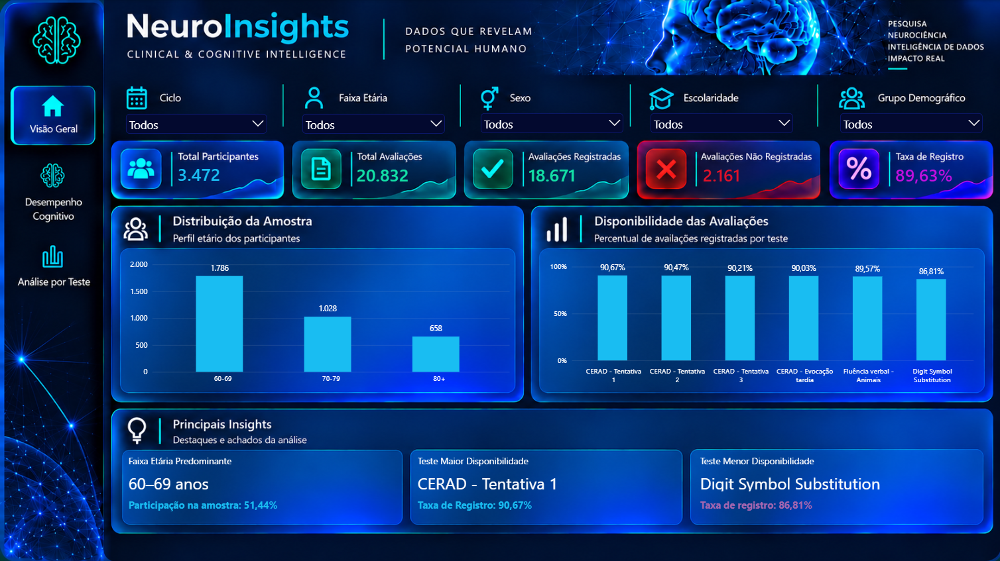
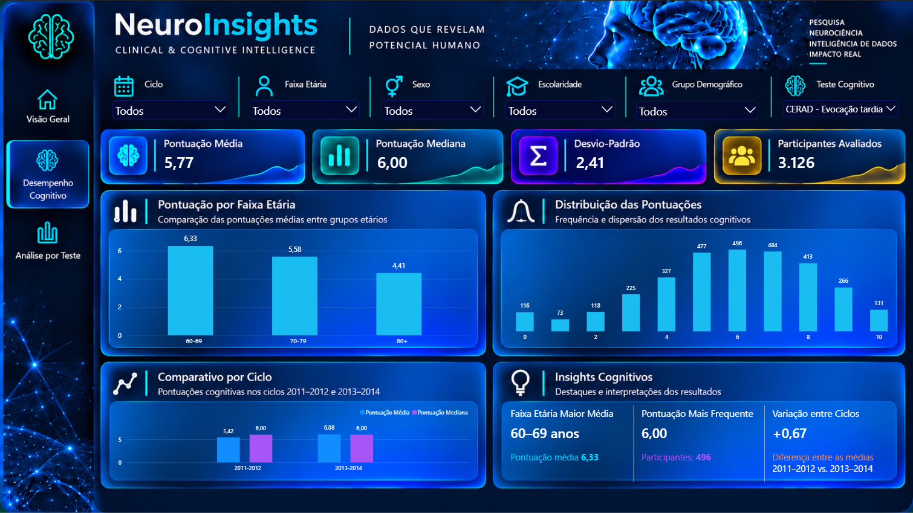
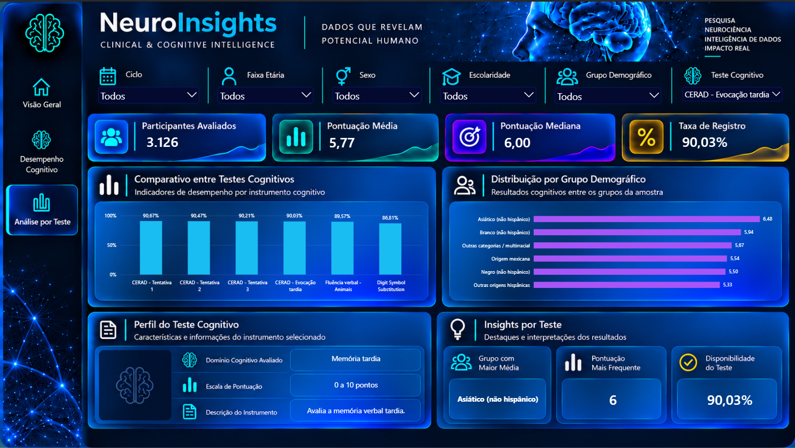

Objetivo da análise
Explorar padrões descritivos de desempenho cognitivo, considerando diferenças entre instrumentos, características demográficas e disponibilidade das avaliações.
Análise exploratória de avaliações cognitivas de adultos com 60 anos ou mais, utilizando dados públicos do NHANES referentes aos ciclos de 2011 a 2014. O projeto integra processamento e validação de dados em Python, modelagem dimensional e visualização interativa em Power BI, permitindo investigar pontuações, características demográficas e disponibilidade dos registros.
Da preparação dos dados públicos à construção de indicadores cognitivos e visualizações interativas.
Explorar padrões descritivos de desempenho cognitivo, considerando diferenças entre instrumentos, características demográficas e disponibilidade das avaliações.
Integração de dados cognitivos e demográficos do NHANES, com auditoria de variáveis, validação de chaves, tratamento de registros e organização das bases nas camadas Silver e Gold.
Modelagem dimensional com tabelas de participantes, ciclos, testes e avaliações. Construção de medidas DAX e três páginas interativas para exploração de indicadores e distribuições.
Distribuição das pontuações por instrumento, desempenho por faixa etária, comparação descritiva entre ciclos e completude dos registros. As análises são exploratórias e não representam diagnósticos clínicos.
Os resultados descrevem a amostra analítica. Inferências populacionais exigem a aplicação adequada do desenho amostral complexo do NHANES.


